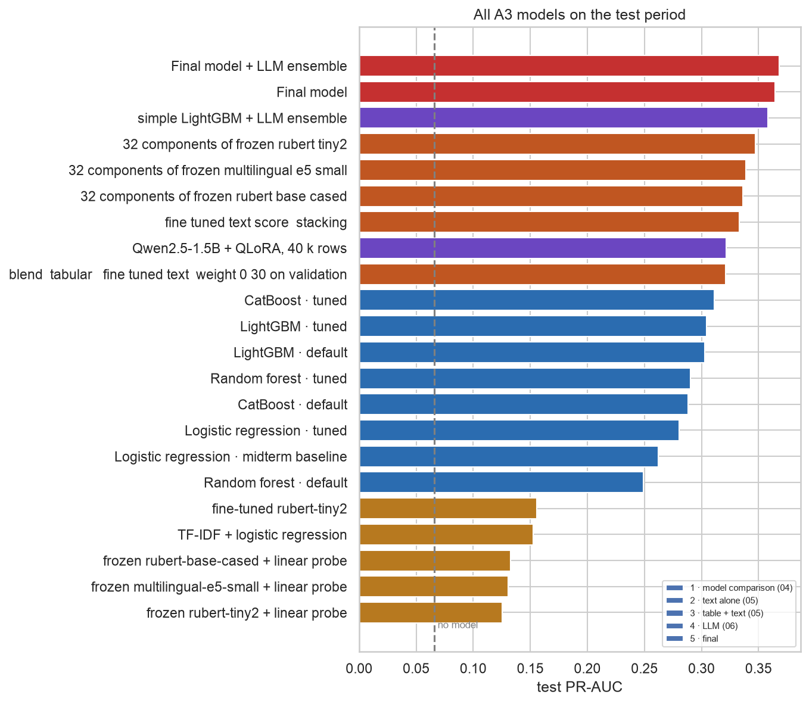
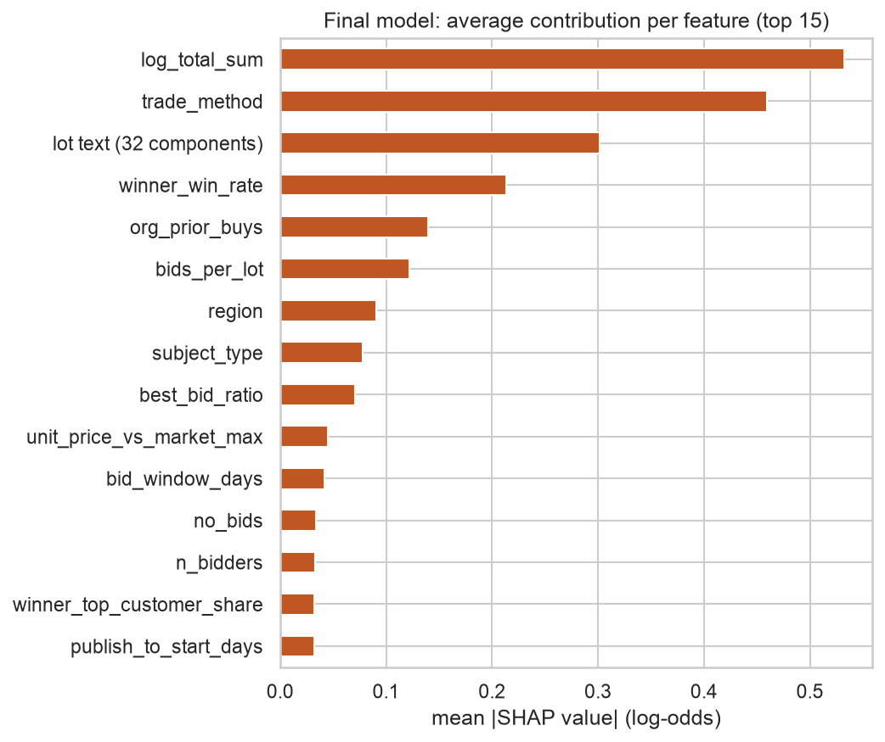

Проект предсказывает в момент выбора победителя госзакупки в Казахстане, сорвётся ли договор — будет расторгнут или не заключён, — чтобы надзорные органы могли упорядочить закупки для проверки. Данные — все 358 789 закупок I квартала 2024 года на национальном портале (OWS v3 API), по которым был договор; 6,6 % из них сорвались. Разбиение по времени: train = январь–февраль, validation = 1–15 марта (все решения), test = 16–31 марта (оценивается один раз). Метрика выбора — PR-AUC (average precision), потому что проверяющий работает с верхом ранжированного списка; также приводятся ROC-AUC, F1 при пороге с validation, точность среди 1 % самых рискованных (P@1%), полнота в топ-5 % и Brier, а каждая разница на test идёт с парным бутстрэп-интервалом 95 % (1 000 перевыборок). Baseline мидтерма — логистическая регрессия с весами классов на 20 признаках — дал PR-AUC 0,262. Assignment 3 спрашивает, насколько это можно улучшить и, главное, откуда берётся улучшение: от лучшей модели, её настройки или новой информации о закупке.
| 20 признаков мидтерма, период test | по умолчанию | настроена | прирост от подбора [95 %] | что решило в поиске |
|---|---|---|---|---|
| Логистическая регрессия | 0,262 | 0,280 | +0,018 [+0,015; +0,022] | отказ от весов классов (L1, C = 0,1) |
| Случайный лес | 0,249 | 0,290 | +0,041 [+0,033; +0,049] | доля признаков на разбиение (86 % разброса), глубина 13 |
| LightGBM | 0,303 | 0,304 | +0,001 [−0,007; +0,010] | только шаг обучения; ранняя остановка оставляет ~9 деревьев |
| CatBoost | 0,288 | 0,311 | +0,023 [+0,016; +0,030] | глубина 8, без весов классов |
Смена семейства модели — самый большой прирост при фиксированных признаках: настроенный CatBoost даёт 0,311 против 0,262 (+0,049 [+0,039; +0,059]); две библиотеки бустинга заканчивают в пределах 0,007 друг от друга. Подбор помогает, когда настройки по умолчанию плохие (полностью выращенные деревья случайного леса переобучаются и оказываются ниже линейного baseline), и ничего не даёт для LightGBM, у которого PR-AUC на validation достигает пика после горстки деревьев — поиск в итоге выбирает, где остановиться. Кривые сходимости выходят на плато примерно после 15 попыток. Порог, оптимальный по F1 на validation, поднимает полноту на test с 5 % (порог 0,5) до 41 % при точности 34 %; масштабирование Платта снижает Brier baseline с весами классов с 0,200 до 0,055, не меняя ранжирования, а настроенный CatBoost — обученный без весов — уже откалиброван.
| Текст названий лотов | один, test | один, незнакомые тексты | добавлен к LightGBM на 20 признаках (0,311) |
|---|---|---|---|
| TF-IDF + логистическая регрессия (без переноса) | 0,153 | 0,200 | — |
| Замороженные rubert-tiny2 / e5-small / rubert-base + линейная проба | 0,125 / 0,131 / 0,133 | 0,172 / 0,189 / 0,187 | +0,036 / +0,028 / +0,025 (32 компоненты) |
| Дообученная rubert-tiny2 (среднее по 3 зёрнам) | 0,154 ± 0,002 | 0,232 ± 0,005 | +0,022 (стекинг), +0,010 (смешивание) |
Замороженные кодировщики переносят общие знания языка (заметно выше 0,066 без модели), но в одиночку проигрывают TF-IDF: сходство в обычном русском — не риск закупки. Дообучение даёт лучшую текстовую модель на названиях, не встречавшихся при обучении (0,228–0,237 против 0,200), то есть модель выучивает лексику задачи. Но внутри табличной модели лучший способ добавить текст — 32 замороженные компоненты rubert-tiny2 (+0,036 [+0,025; +0,048]): они сообщают деревьям, что покупают, а одна дообученная оценка риска это теряет. Большие кодировщики для каталожных названий из пяти слов пользы не дали.
Qwen2.5-1.5B, дообученная через QLoRA, даёт PR-AUC на test 0,322 (ROC-AUC 0,808) — выше любой модели на 20 признаках, — но ниже LightGBM на тех же 40 000 строк и той же информации (0,334; разница −0,011 [−0,024; 0,000]) — как и ожидалось по TabLLM, где преимущество LLM на табличных данных исчезает при большом числе примеров (Hegselmann et al., 2023), — и ещё ниже LightGBM на всём train (0,350; −0,028 [−0,041; −0,015]). В среднем с бустингом (вес выбран на validation) она добавляет немного, но значимо: +0,008 [+0,005; +0,012] к LightGBM и +0,004 [+0,001; +0,007] к финальной модели, то есть её ошибки отличаются от ошибок деревьев.


Рисунок 1. Слева: PR-AUC на test для каждой модели A3 (пунктир — без модели, 0,066). Справа: средний модуль значения SHAP признаков финальной модели (32 текстовые компоненты сложены в одну). Подписи на графиках — на английском.
| Модель (период test, 38 981 закупка) | PR-AUC [95 %] | ROC-AUC | P@1% | R@5% |
|---|---|---|---|---|
| Без модели | 0,066 | 0,500 | 0,057 | 0,044 |
| Baseline мидтерма: логистическая регрессия, 20 признаков | 0,262 [0,246; 0,280] | 0,792 | 0,504 | 0,263 |
| Настроенный CatBoost, 20 признаков | 0,311 [0,293; 0,331] | 0,807 | 0,573 | 0,307 |
| Qwen2.5-1.5B + QLoRA | 0,322 [0,302; 0,342] | 0,808 | 0,594 | 0,320 |
| Финальная: CatBoost, 61 признак, откалибрована | 0,364 [0,343; 0,385] | 0,827 | 0,715 | 0,337 |
| Финальная + LLM, ансамбль | 0,368 [0,347; 0,390] | 0,826 | 0,715 | 0,342 |
Финальная модель выбрана на validation из трёх кандидатов (CatBoost 0,405, простой LightGBM 0,400, LightGBM, заново настроенный на 61 признаке, 0,386 — подбор снова не помог). Для проверяющего, который проверяет 1 % закупок (≈ 390 за две тестовые недели), она находит ≈ 280 сорванных договоров вместо ≈ 196 у модели мидтерма. Прирост делится на два похожих шага: семейство модели (+0,049) и новая информация при том же CatBoost (+0,053). Абляции показывают, что эта информация — почти целиком текст лотов (−0,025 [−0,034; −0,016] без него), а признаки истории «заказчик–поставщик» и цены, предсказательные сами по себе, ничего не добавляют при наличии текста — что согласуется с выводом, что коррупционные «красные флаги» почти не связаны с проблемами исполнения (Decarolis & Giorgiantonio, 2022). SHAP ставит на первые места сумму (0,53), способ (0,46) и текст лотов (0,30), затем долю побед победителя в прошлом (0,21). Наибольшие улучшения — у закупок из одного источника после несостоявшейся закупки (подъём над долей срывов 2,2 → 8,0) и у самой дешёвой четверти закупок (2,3 → 3,6), самого слабого сегмента модели мидтерма.
Найденная и устранённая утечка. Ранняя версия ресёрча добавляла признаки «активности победителя», которые выглядели третьим по важности источником информации (+0,025). Победитель брался из таблицы договоров; проверка верха ранжированного списка показала, что подписант договора даже не подавал заявку в 27 % успешных, но в 63 % сорвавшихся закупок — после отказа договор уходит кому-то другому, поэтому кто подписал — отчасти уже исход. Определение победителя по объявлению или минимальной цене (с процедурным правилом при ничьей) убирает прирост полностью (−0,003 [−0,008; +0,002]). Утечка была в связке между записями, а не в каком-то одном поле — случай из типологии утечек Kaufman et al. (2012).
| Гипотеза (записана до экспериментов) | Результат |
|---|---|
| H4 Семейство модели важнее подбора | Подтверждена: семейство +0,04–0,05; подбор от 0 до +0,04, большой только при плохих настройках по умолчанию |
| H5 Новая информация важнее подбора | Подтверждена: тот же CatBoost, +0,053 от информации против +0,023 от подбора |
| H6 Текст полезен вместе с таблицей, а не сам по себе | Подтверждена: один текст в лучшем случае 0,156; самое большое добавление к таблице (+0,036) |
| H7 Дообучение делает текст сильнее TF-IDF | Частично: в целом наравне, явный выигрыш на незнакомых текстах; как признак лучше замороженные компоненты |
| H8 LLM ниже бустинга, но помогает в ансамбле | Подтверждена: −0,028 против бустинга на всех данных; +0,004 [+0,001; +0,007] в ансамбле |
| H9 Калибровка исправляет вероятности, не меняя ранжирования | Подтверждена: Brier 0,200 → 0,055 у baseline с весами; PR-AUC не изменился |
Все модели обучены на январе–феврале 2024 и проверены на второй половине марта: закупки в конце года, когда бюджет осваивают в спешке, могут срываться чаще и по другим причинам. Метка — итоговый статус на портале, а расторжения «по соглашению сторон» включают безобидные случаи (строгая метка сохранена в данных). Используется только информация, известная в момент выбора победителя, что намеренно исключает самые сильные сигналы прототипа на правилах (исполнение договора, платежи, штрафы): они и есть сам исход. Результаты на видеокарте (дообучение, LLM) могут отличаться в третьем знаке на другом железе.
Лучшая модель и лучшая информация вносят примерно поровну: градиентный бустинг и новая информация дают каждый около 0,05 PR-AUC, а подбор гиперпараметров сверх разумных настроек по умолчанию добавляет мало или ничего. Самая ценная новая информация — текст того, что покупают, и лучший способ передать его табличной модели — компактный замороженный эмбеддинг, а не дообученная оценка; дообучение окупается, когда тексты новые. LLM на 1,5 млрд параметров, дообученная через QLoRA на бесплатной видеокарте, учит задачу, но не обгоняет бустинг на сотнях тысяч строк; она полезна как второе мнение в ансамбле. Финальная модель ранжирует сорванные договоры с PR-AUC 0,364 и откалиброванными вероятностями и находит примерно на 40 % больше срывов, чем модель мидтерма, при том же бюджете проверок. Методологически главный урок: подозрительно большой прирост нужно проследить до момента, когда становится известно каждое значение — и каждая связка между записями.
Akiba, T., Sano, S., Yanase, T., Ohta, T., & Koyama, M. (2019). Optuna: A next-generation hyperparameter optimization framework. KDD, 2623–2631.
Decarolis, F., & Giorgiantonio, C. (2022). Corruption red flags in public procurement: New evidence from Italian calls for tenders. EPJ Data Science, 11(1).
Dettmers, T., Pagnoni, A., Holtzman, A., & Zettlemoyer, L. (2023). QLoRA: Efficient finetuning of quantized LLMs. NeurIPS.
Fazekas, M., & Kocsis, G. (2020). Uncovering high-level corruption: Cross-national objective corruption risk indicators using public procurement data. British Journal of Political Science, 50(1), 155–164.
Hegselmann, S., Buendia, A., Lang, H., Agrawal, M., Jiang, X., & Sontag, D. (2023). TabLLM: Few-shot classification of tabular data with large language models. AISTATS.
Hu, E. J., Shen, Y., Wallis, P., et al. (2022). LoRA: Low-rank adaptation of large language models. ICLR.
Kaufman, S., Rosset, S., Perlich, C., & Stitelman, O. (2012). Leakage in data mining: Formulation, detection, and avoidance. ACM TKDD, 6(4), 15.
Ke, G., Meng, Q., Finley, T., et al. (2017). LightGBM: A highly efficient gradient boosting decision tree. NeurIPS.
Lundberg, S. M., Erion, G., Chen, H., et al. (2020). From local explanations to global understanding with explainable AI for trees. Nature Machine Intelligence, 2, 56–67.
Prokhorenkova, L., Gusev, G., Vorobev, A., Dorogush, A. V., & Gulin, A. (2018). CatBoost: Unbiased boosting with categorical features. NeurIPS.